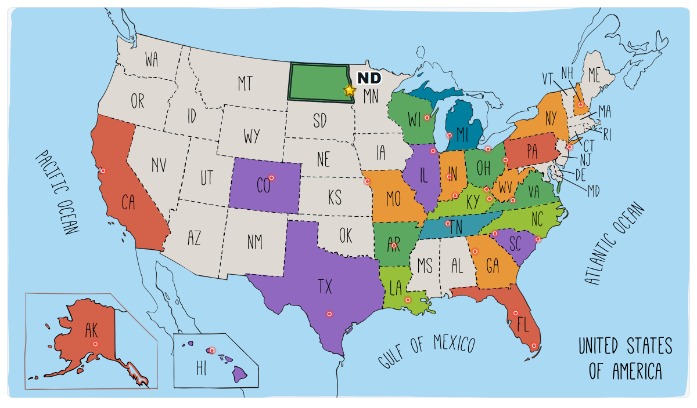

RUN50 DISPATCH · NORTH DAKOTA
第25州 · 北达科他 · Fargo Marathon
北达科他法戈 · 2025.05.31
Vlog 开场位｜从蓝草州一路开到大平原，在粉色天空、玉米地、热浪和破4里完成 Run50 半程分水岭。
OPENING NOTE
从蓝草州一路开到大平原，在粉色天空、玉米地、热浪和破4里完成 Run50 半程分水岭。
本文速记
从蓝草州一路开到大平原，在粉色天空、玉米地、热浪和破4里完成 Run50 半程分水岭。

Run50 #第25州｜北达科他州：法戈马拉松｜跑进美剧小镇，踏上50州跑马的“半程分水岭”！奖牌质感封面。

第25州北达科他点亮，Run50 的半程分水岭落在 Fargo。
FIELD NOTE 01
从蓝草到玉米地，跨越半个美国
前言
这一次，我们从肯塔基的 Louisville 出发，直奔美国中北部的大平原：北达科他。

Storm clouds opening over the road north @Arsenan
车程十几个小时，说长不长，说短也绝对不短。

Crossing under a colorful overpass @Arsenan
傍晚上路时，天空染成一半深紫一半火红，远处一排排风车慢悠悠转着。

Red sunset stripe on the interstate @Arsenan
这趟法戈之行，我们打算来个“露营+跑马”的组合玩法。白天跑步，晚上在车里露营。

Wind turbines at dusk on the plains @Arsenan
露营地很安静，价格和汽车旅馆其实也差不多，但露营更好玩，有点美式“公路片”的味道。

Exit sign under a North Dakota sunset @Arsenan
FIELD NOTE 02
辽阔、寂静、风很大
第25州 · 北达科他
北达科他（North Dakota），可能是你在地图上不太会点开的那一块。

Dark highway after the long drive @Arsenan
这州地儿是真大，人是真少。人口在全美倒数第二，放眼一望，全是地。

Campsite parking spot beside the trees @Arsenan
冬天冷得能把鼻毛冻成冰柱，春天也风大得能把人跑偏。Fargo 马拉松就开在这种“风吹草低见玉米”的季节。

Road-trip snacks in the front seat @Arsenan
北达科他的首府叫 Bismarck，不过最大城市是 Fargo，坐落在 Red River 河畔。

Car lunch before reaching Fargo @Arsenan
很多人对这地的印象都是美剧《Fargo》，阴冷、神秘、各种奇案。

Flat prairie from the car window @Arsenan
但现实版 Fargo，其实是个朴实的小城：干净、安静、天很高、风很大，街上跑着皮卡和大卡车，一派“北方农场主的生活气息”。

RV campground selfie before race day @Arsenan
说起这地方的居民构成，早年这片大草原主要是德国、斯堪的纳维亚移民定居下来的。现在州内还有不少德裔和北欧裔后代，还会有那种非常“老实厚道”的北欧式生活气质。

Campground sign at dusk @Arsenan
北达科他还有几个挺特别的点：

Quiet field behind the campground @Arsenan
农业大州：小麦、大豆、玉米、向日葵的主要产区之一。

Dusty gravel road through farmland @Arsenan
风力发电：风大得出奇，一路能看到一排排风车。

Crowd gathering outside the FargoDome @Arsenan

Fargo Marathon start sign in the morning @Arsenan
冬天很狠：零下二三十度是常事，暴风雪也很有名。

Pink kit selfie at the start @Arsenan
FIELD NOTE 03
公路与营地 · 一路往北
Chapter 1
第一晚在一个房车露营地过夜。车停在草地上，旁边是树，天上挂着半轮月亮。Tesla 慢慢充着电，我们就躺在车里，不过路有点不平，半夜睡觉总往一个方向出溜。

Runners heading out of the FargoDome @Arsenan
第二天继续上路，周围基本就是农田、风车，还有偶尔呼啸而过的大卡车。

Early miles under a pale sun @Arsenan
我们追着时间，终于傍晚终于到了法戈。赶在马拉松Expo关门前取到了参赛号码簿，然后去了法戈的露营地，营地在小镇边上，一边是一辆辆房车，一边是大卡车停靠区。

in the pink jersey · 赛事摄影
刚一停好车，就有个卡车老奶奶过来聊天。她一听说我们从肯塔基开过来，立马兴奋了，话题直接飙到 AI、自动驾驶和特斯拉危机……信息量大得我一时都没缓过神。

in the first miles · 赛事摄影
她说自己不太信任AI，对特斯拉最近那些事挺担心。我一边听一边点头，心里想美国老太太懂的还挺多。

running with the pack · 赛事摄影
FIELD NOTE 04
粉色天空下起跑
Chapter 2
第二天一早，我们在车里醒来。夜里露营的那片营地挺安静，早晨的空气有点凉，天边泛着一层淡粉色的光。洗漱简单收拾完，我们就开车去起点了。

Water stop in the early neighborhood miles @Arsenan
路两边是一望无际的农田，大片土地还没来得及种上庄稼，显得空荡荡的。太阳挂在低空，像一颗红色小球，透着一股“北方的静”。

Runners turning through Fargo side streets @Arsenan
没开多远就上了砂石路，车轮碾过扬起一片尘土，感觉有点像进了电影里的“大平原小镇”。

Mile 1 sign in front of a blue house @Arsenan
起点就在 Fargodome 体育馆 附近，全马马上就要开跑了，我们刚到停车场。我就想和半马的队伍一起也行，还能多感受下起跑氛围。

Neighborhood crowd after mile one @Arsenan
这次我穿的是粉红色的阿森纳球衣，在人群里挺显眼的。清晨的法戈天上带着一层淡淡的粉色。

Half and marathon split sign at mile one @Arsenan
起跑后，赛道先带我们进入小区。路线不复杂，就是绕着一片整洁的居民区跑，典型的美式小区：草坪修得整整齐齐，房子宽敞大方，门口摆着躺椅。

Driveway musicians cheering the course @Arsenan
刚开始我还有点担心，会不会跑错路线，毕竟全马和半马的线路不一样。但没多远就遇到了全半程分流的牌子，我一个人顺着全马路线跑了上去。

Mile 2 sign under leafy trees @Arsenan
说是“孤独”，其实也不太准确。因为在小区里，很多居民早早就在自家门口搭好椅子、音响、烧烤炉，给跑者加油，特别有社区感。

Full, 10K, and half split signs @Arsenan

Runner ahead on a brick-paved street @Arsenan
这场比赛是 50 States Marathon Club 的集结赛事，所以能看到不少穿着俱乐部服装的“老江湖”们。他们的衣服背后都写着跑过的州数，一个个都是传奇人物。

Long straight street in the suburbs @Arsenan
沿途的小区居民也很有意思，有的打扮成摇滚乐手、拿着吉他在门口表演；还有人全副“星战”coser 装扮；拐角处还有志愿者在打架子鼓，一路都是热闹的街坊氛围。

Curving sidewalk beside new houses @Arsenan
不知不觉就跑到了第 8 英里，赛道渐渐从小区拐进了 Fargo 的 downtown。法戈的市中心不大，老建筑和新公寓混在一起，有一种朴素的小城工业风。这里温度明显升高了。

Pacers leading the neighborhood pack @Arsenan
FIELD NOTE 05
玉米棒子大学与友军阿森纳
Chapter 3
出了 Downtown，来到第 10 英里标志处。

Air-guitar cheerleader in a driveway @Arsenan
接下来是一个很有特色的路段：一个铁路下的隧道，顶上是厚重的铁轨结构，两边是混凝土墙，跑进去瞬间凉快了不少。虽然隧道不长，但出来就是一个上坡，挺累。

Drummer playing from the curb @Arsenan
上坡后就是一个补给站，一群黑人兄弟穿着统一的夹克，边加油边递水，气氛特别热烈。我跟他们一边击掌一边接水，瞬间又复活了。

Pacer shirts guiding the pack @Arsenan
前面就是 Veterans Memorial Bridge（退伍军人纪念桥），跨过的这条河叫 Red River of the North（北红河），是美国和加拿大边境附近一条很有历史的河流。

Selfie in the pink Arsenal kit @Arsenan
它的走向很特别，是美国少有的“向北流”的河流，最后注入加拿大的温尼伯湖。

Mile 8 sign beside the open road @Arsenan
桥上还有一支穿着苏格兰裙的风笛鼓队在演奏，真是仪式感拉满。

Sprinkler spray on a hot Fargo mile @Arsenan
过了桥，就进入了 Moorhead, Minnesota，这已经是明尼苏达州的地界了。Fargo 和 Moorhead 就隔着这条河，相当于“跨州马拉松”，很有意思。

Runner with mile markers behind him @Arsenan
在这里，我意外遇到了两年前在 肯塔基 Derby 马拉松遇到的那位阿森纳球衣跑者。他这次穿的是经典红色主场队服，我则是粉色的。我们俩在赛道上还打了个招呼，他还记得我，太巧了！

Pace group moving toward downtown @Arsenan
接下来路线跑进了一所大学校园，Concordia College（康考迪亚学院）。这所学校建于 1891 年，是一所私立文理学院，早年由挪威移民社区创办，所以有浓厚的路德宗传统。校园很有北欧小镇的味道，红砖建筑、教堂钟楼，还有绿树成荫的小道。

Downtown Fargo stretch opens up @Arsenan
最逗的是，他们的吉祥物是一个巨大的“玉米棒子”，站在路边跟跑者互动。北达科他这片就是玉米地的天下，吉祥物选这个再合适不过了。

Mile 10 sign by the brick wall @Arsenan
穿过校园，很快又回到了河边。桥的另一侧，有一个迷你版的自由女神像静静地矗立在街角，看着跑者从身边经过。

High five near the underpass @Arsenan
又回到北达州了，这一路：从大平原出发，穿越小镇，跨过州界，跑过钟楼和玉米地，离终点越来越近了。

Bridge crossing into the next section @Arsenan

Egg handoff at the aid table @Arsenan
FIELD NOTE 06
最后6英里 · 热浪，又破4了
Chapter 4
进入最后6英里。路边出现了一支临时交响乐团：小孩拉小提琴、大人拉大提琴，还有人打着节拍。阳光照在乐器上，闪闪发亮。

Tiny cup from a kid volunteer @Arsenan
再往前，我又遇到了“黑人兄弟补给站”，笑容还是那么灿烂。补给点后不远，小朋友们又出场了，有的打扮成小公主，有的光着脚丫，举着果冻糖袋子，递给路过的跑者。

Running past downtown concrete @Arsenan
进入市区，阳光更足，热浪也扑面而来。街头有一段彩绘玻璃长廊，上面画着树和花，看着很清凉，但并没有望梅止渴的作用：那只是“视觉降温”，身体一点没凉快。

Mile 11 sign beside the sidewalk @Arsenan
再往前，最经典的一幕出现了：Fargo大牌子！这块蓝色的竖式霓虹牌子，挂在一栋1930年代的老剧院外墙上，是Fargo最著名的地标。

Green lawn on the long residential stretch @Arsenan
以前这里是电影院，现在是剧院兼演出中心。几乎所有Fargo的宣传照、纪念品、甚至马拉松奖牌设计里，都会出现这块大牌子。可以说，谁没在这里留张照片，谁就算没来过Fargo。

Veterans Memorial Bridge sign @Arsenan
热归热，还是得顶着跑。摄影师在街边拍照，我也戴上了“痛苦面具”，咬牙装酷。

Bagpipe band on the bridge plaza @Arsenan
跑出市区又进了小区。就在快要走走停停的时候，一个美国女生跑者从身边冲过，对我喊：“Don’t stop, keep going!” 这句鼓励像是一针强心剂。

Quiet road after crossing the bridge @Arsenan
终于，终点的大拱门出现在视线里。主持人拿着话筒喊出我的名字，还伸手跟我击掌，我感觉像明星出场一样。最后成绩定格在 3小时53分，破四完成！

Aid station pause with other runners @Arsenan
Siqi已经在终点等我，我们一起拍了好多照片。奖牌拿在手里，是长方形金色设计，上面刻着Fargo大牌子的造型，线条拉射出去，像光芒一样，寓意“点亮北方小城的骄傲”。

Red-shirt runner friend on the course @Arsenan
FIELD NOTE 07
欧冠决赛、星链网与充电汉堡
回程
跑完法戈马拉松，我们并没有立刻返程，而是按照“惯例”先找地方洗个澡。Fargo 这边 Planet Fitness 不多，最近的一家在一个多小时车程之外。

Front-yard band in the neighborhood @Arsenan
这天正好是欧冠决赛，我在车里用 Siqi 的 Starlink 星链网络，看着巴黎圣日耳曼 5:0 国际米兰，第一次捧得欧冠。

Concordia College sign on campus @Arsenan
想着十几年前我们还得找信号差的体育台，现在跑完马拉松，在车里一边充电一边看高清直播，真的是“科技改变生活”。

Cobber mascot reaching out @Arsenan
晚上我们住进了一家小旅馆，好好睡了一觉。第二天继续启程，午饭在 Buffalo Wild Wings 解决，炸鸡翅、汉堡、薯条，典型的美式跑后大餐。

Clock tower at Concordia College @Arsenan
一路往回开，晚上经过明尼阿波利斯的时候，还顺道吃了顿中餐，菜色经典，味道也很美国，环境还挺讲究的。

Flag-lined campus walkway @Arsenan

Shaded campus path toward the fountain @Arsenan
从白天开到黑夜，我们就一路回到了 Louisville。自动驾驶一路护航，虽然时间长，但也不算太累。

Bell tower framed by yellow pennants @Arsenan
这次北达州之行，虽然行程紧凑，但跑马、露营、自驾、欧冠、中餐、汉堡……啥也没少，算是非常“完整”的周末了。

Fountain and race flags on campus @Arsenan
FIELD NOTE 08
Run50 半程，25州 分水岭
后记
回头一想，这趟 50 州跑马拉松的旅程，已经整整跑了 25 个州。

Hot-road selfie in the second half @Arsenan
第一场，还得从 2020 年 11 月的路易斯维尔马拉松 说起。那会儿正是疫情时期，也没啥系统训练，纯靠一腔热血，戴着口罩就上了北美的赛道。那一跑，像是命运的开关被“啪”地一下按下。

Bridge back toward Fargo @Arsenan
这三四年间，我和 Siqi 开着车、坐着飞机，从南到北，从东到西，一场一场地把美国地图“点亮”：

Statue at the bridge entrance @Arsenan
从纽约的大城市马拉松，到夏威夷的海岛赛道；

Red River bend beside the course @Arsenan
从阿拉斯加的清晨薄雾，到佛罗里达的艳阳海风；

Brass band playing on the grass @Arsenan
从匹兹堡的钢铁桥，到蓝岭山的疯狂爬升；

Aid stop chat in the heat @Arsenan
从科罗拉多的高原，到北达科他的玉米地小镇……

Kids cheering on the neighborhood street @Arsenan
每一场都有故事，每一场也在地图上画下一个小点，每一场我都想留下文字去记录它。

Mile 21 sign under the shade @Arsenan
而这一站，Fargo，正好是第 25 州，Run50 的旅程正式跑过了“半程分水岭”。

Pink tutu runner on the curb @Arsenan
前面 25 个州，有冲动、有坚持，也有不少小插曲；

Neighborhood cheer block near the finish @Arsenan
后面 25 个州，还有高山、沙漠、草原、海岸在等着我们。

FargoDome finish road coming back @Arsenan
下个州继续出发！西部世界的冒险，才刚刚开始……

Fargo, North Dakota road moment 76 @Arsenan
RUN50 FINISH LINE
这一站，收进地图。
跑到第25州，数字突然有了重量。Fargo 不只是一个美剧名字，也成了这张地图的中点。
25
RUN50
FARGO
MARK
HALF
NOTE
半程分水岭这种东西，跑的时候没感觉，回头看才有点重。你也可以留言讲讲自己的 halfway moment。
文字 / 编辑 / 排版 · Arsenan